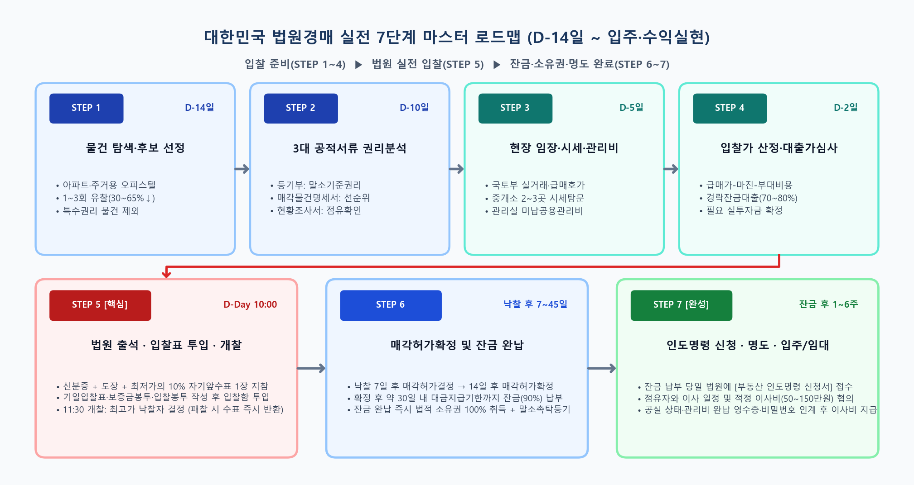
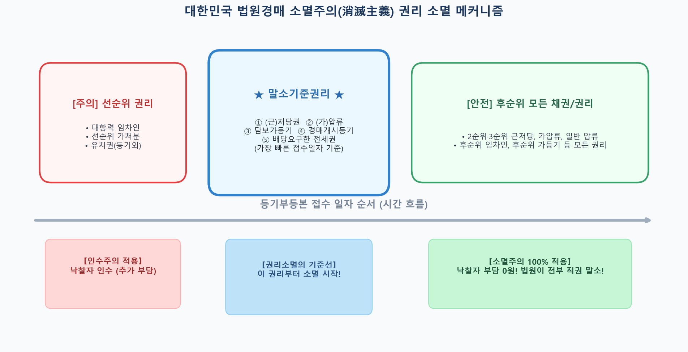
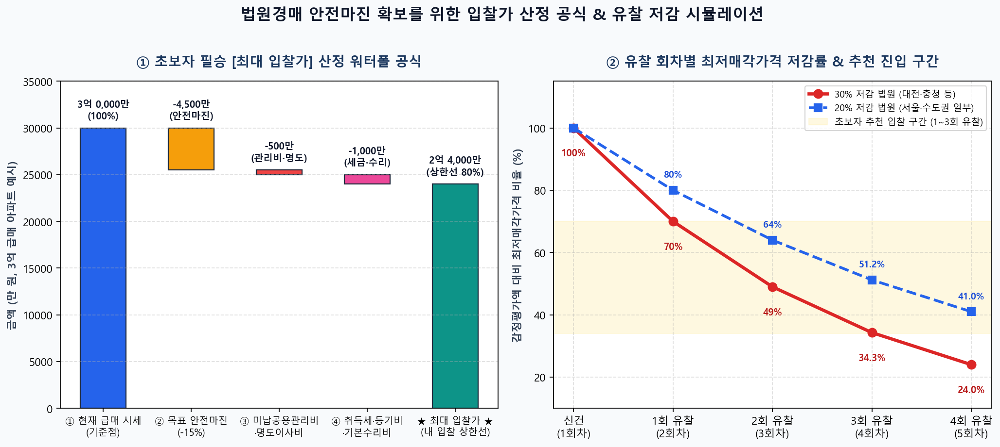
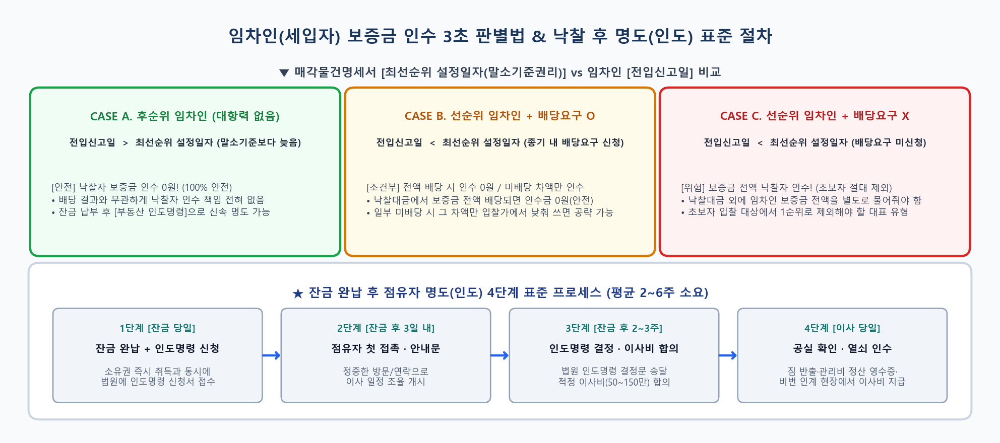
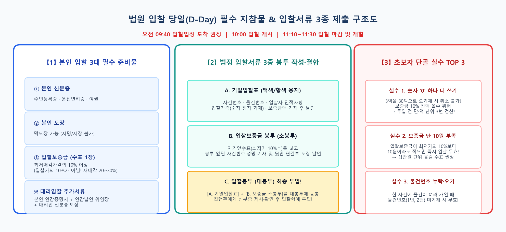

🧭 초보자를 위한 대한민국 법원경매 실전 진행 가이드 (A to Z)
물건 검색부터 권리분석, 현장 임장, 법원 입찰표 작성, 경락잔금대출, 인도명령·명도까지 처음 입찰하는 분도 그대로 따라 할 수 있는 7단계 표준 매뉴얼입니다.
1. 실전 경매 진행 7단계 로드맵 (D-14일 ~ 입주·수익실현)

📊 [인포그래픽 1] 법원경매 7단계 마스터 타임라인 (D-14일 물건 선정부터 명도·입주까지 한눈에 보기)
STEP 1 · 물건 탐색 및 후보 선정
입찰 D-14일
초보자에게 안전한 '유찰 1~3회 + 소멸주의 주거용 물건' 골라내기
- 추천 입문 물건: 시세 파악과 환금성이 뛰어나고 경락잔금대출이 잘 나오는 아파트·주상복합·주거용 오피스텔부터 시작하세요.
- 적정 할인 구간: 신건(1회차)은 시세보다 비싼 경우가 많으므로 1~3회 유찰되어 감정가 대비 30%~65% 할인된 물건을 타깃으로 잡습니다.
- 초보자 금지 물건:
지분경매, 유치권, 법정지상권, 토지 별도등기, 선순위 가처분/가등기 물건은 처음에 과감히 제외하세요.
STEP 2 · 3대 공적 서류 권리분석
입찰 D-10일
등기부등본 · 매각물건명세서 · 현황조사서 열람하기
- ① 등기부등본 (말소기준권리 찾기): 등기부 전체에서
근저당권·저당권·압류·가압류·담보가등기·경매기입등기 중 접수일이 가장 빠른 권리가 말소기준권리입니다. 잔금 납부 시 이 권리와 그 이후 권리는 100% 직권 말소(소멸주의)됩니다.
- ② 매각물건명세서 (매각기일 7일 전 공개): 법원이 작성하는 가장 중요한 공식 문서입니다. 좌측 상단 [최선순위 설정일자]보다 전입일이 빠른 임차인이 있는지 확인하세요.
- ③ 현황조사서 & 감정평가서: 현재 누가 점유(소유자 거주 vs 임차인 거주 vs 공실)하고 있는지, 건물 층수·구조·누수 여부 등을 확인합니다.
💡 핵심 공식: 임차인의 전입신고일이 [최선순위 설정일자]보다 늦다면(후순위), 보증금을 얼마 못 받더라도 낙찰자가 단 1원도 물어줄 필요가 없습니다!

📊 [인포그래픽 2] 대한민국 민사집행법 소멸주의(제91조 제2항) 작동 원리 및 말소기준권리 기준선
STEP 3 · 현장 임장(답사) 및 시세·관리비 조사
입찰 D-5일
감정가를 믿지 말고 '오늘 당장 팔릴 급매가'와 '미납 관리비' 확인하기
- 실거래가 및 급매 호가 조사: 국토교통부 실거래가 공개시스템과 네이버부동산에서 최근 6개월 실거래가 및 현재 나와 있는 가장 싼 급매물 가격을 확인합니다.
- 공인중개소 최소 2~3곳 방문: 단지 내 부동산을 방문해 "급매로 내놓으면 바로 거래되는 금액"과 "전세·월세 시세 및 수요"를 직접 듣습니다.
- 관리사무소 미납 관리비 확인: 전 소유자가 밀린 관리비 중 공용부분(일반관리비·경비비·청소비)은 대법원 판례상 낙찰자가 부담합니다. 연체 개월 수와 대략적인 금액을 확인해 입찰가에서 빼야 합니다.
STEP 4 · 목표 입찰가 산정 및 경락잔금대출 가심사
입찰 D-2일
안전마진이 확보된 상한 입찰가 계산 & 대출 한도 사전 점검
- 최대 입찰가 산정 공식:
최대 입찰가 = 현재 급매 시세 - 목표 안전마진 - (취득세 + 법무등기비 + 미납 공용관리비 + 명도 이사비 + 수리비)
- 경락잔금대출 사전 확인: 낙찰 후 잔금을 못 내면 입찰보증금(10%)을 몰수당합니다. 입찰 전 은행이나 대출상담사를 통해 경락잔금대출 가능액(통상 낙찰가의 70~80% 또는 감정가의 60% 중 낮은 금액)을 반드시 확인하세요.

📊 [인포그래픽 3] 손해 보지 않는 상한 입찰가 역산 공식 & 법원별 유찰 차수별 최저가·보증금 변화표
STEP 5 · 법원 입찰 당일 실전 응찰
D-Day 오전 10:00 ~ 11:30
관할 법원 입찰법정 출석 · 기일입찰표 작성 및 투입
- 도착 시각: 입찰은 통상 오전 10:00에 시작해 11:10~11:30경 마감됩니다. 최소 오전 9시 40분까지 관할 법원 입찰법정에 도착하세요.
- 입찰보증금 수표 준비: 내가 쓰는 입찰가의 10%가 아니라 법원이 공고한 최저매각가격의 10% 이상(재매각 사건은 20~30%)을 시중은행 자기앞수표 1장으로 준비하면 가장 편리합니다.
- 서류 작성 순서: ① 기일입찰표 작성(사건번호·물건번호·입찰가·보증금액) → ② 보증금봉투에 수표 넣고 도장 날인 → ③ 큰 입찰봉투에 모두 넣고 신분증 확인 후 입찰함 투입!
- 개찰 및 결과 확인: 오전 11:30경 개찰 후 최고가매수신고인(낙찰자)은 보증금 영수증을 받고, 패찰자는 그 자리에서 즉시 수표를 돌려받습니다.
⚠️ 초보자 3대 실수 주의: ① 입찰가 숫자 '0' 하나 더 적기 (입찰함 투입 후 수정·취소 절대 불가!) ② 물건번호 미기재 ③ 보증금 10원이라도 부족 시 무효 처리
STEP 6 · 매각허가확정 및 잔금 납부 (소유권 취득)
낙찰 후 7일 ~ 45일
매각허가결정 → 확정 → 잔금 완납 및 경락잔금대출 실행
- 낙찰 후 7일: 법원이 입찰 절차에 하자가 없는지 심사하여 매각허가결정을 내립니다.
- 낙찰 후 14일: 1주일간 이해관계인의 즉시항고가 없으면 매각허가확정이 되며, 법원이 대금지급기한(보통 확정 후 30일 이내)을 통지합니다.
- 잔금 납부 및 등기: 대금지급기한 내에 은행 대출 실행과 동시에 나머지 잔금(낙찰가 - 보증금 10%)을 법원에 납부합니다. 잔금을 완납한 바로 그 순간 법적 소유권을 100% 취득합니다!
STEP 7 · 명도(인도) 및 입주·임대·매도
잔금 후 1주 ~ 6주
인도명령 신청 및 점유자 이사 협의로 깔끔하게 마무리하기
- 인도명령 신청: 잔금 납부 당일 법원 민사집행과에 부동산 인도명령 신청서를 함께 접수합니다. (소유자·채무자·대항력 없는 임차인 상대로 약 2~3주 내 인도명령 결정문이 발급됩니다.)
- 원만한 명도 협상: 점유자를 방문하거나 안내문을 남겨 이사 일정을 협의합니다. 강제집행 비용을 아끼기 위해 적정 수준의 이사비(소형 50~100만 원, 중형 100~200만 원 선)를 제안하면 대부분 원만하게 퇴거합니다.
- 이사 당일 필수 확인: 반드시 이삿짐을 모두 빼고, 관리사무소 관리비·도시가스·전기·수도 정산 영수증과 도어락 비밀번호를 인계받은 직후 현장에서 이사비를 지급하세요.

📊 [인포그래픽 4] 임차인 대항력·인수위험 3초 판별 매트릭스 & 잔금 납부 후 명도(인도) 4단계 프로세스
2. 입찰 유형별 법원 출석 필수 준비물 표

📊 [인포그래픽 5] 법원 입찰 당일(D-Day) 필수 준비물 & 입찰봉투 3중 제출 구조도
| 입찰 유형 |
필수 지참물 (하나라도 누락 시 입찰 불가) |
비고 및 주의사항 |
| 👤 본인 직접 입찰 |
① 본인 신분증 (주민등록증·운전면허증·여권)
② 본인 도장 (막도장 가능, 서명 불가)
③ 입찰보증금 (최저가의 10% 이상 수표/현금) |
가장 간단하며 초보자에게 권장 |
🤝 대리인 입찰
(배우자·가족 대리 포함) |
① 대리인 신분증 및 대리인 도장
② 본인(입찰자) 인감증명서 1통 (발급 3개월 이내)
③ 본인 인감도장이 날인된 위임장 (기일입찰표 뒷면)
④ 입찰보증금 |
부부 사이라도 대리 입찰 시 반드시 배우자 인감증명서와 위임장 필요 |
| 🏢 법인 입찰 |
① 법인등기사항전부증명서 (발급 3개월 이내)
② 대표자 참석 시: 대표자 신분증 + 법인인감도장
③ 임직원 대리 시: 법인인감증명서 + 법인인감 날인 위임장 + 대리인 신분증·도장
④ 입찰보증금 |
법인 명의 낙찰 시 주택 취득세 중과 여부 세무 확인 필수 |
👥 공동 입찰
(부부 공동명의 등) |
① 공동입찰신고서 및 공동입찰자 목록 (지분 표시)
② 전원 참석 시: 각자 신분증 + 각자 도장
③ 1인만 참석 시: 불참자의 인감증명서 + 인감 날인 위임장 추가
④ 입찰보증금 |
공동입찰신고서에 각자의 지분(예: 1/2씩)을 명확히 기재 |
3. 초보자 입찰 전 10대 자가진단 체크리스트
✅ 나의 실전 입찰 준비도
0 / 10 완료 (0%)